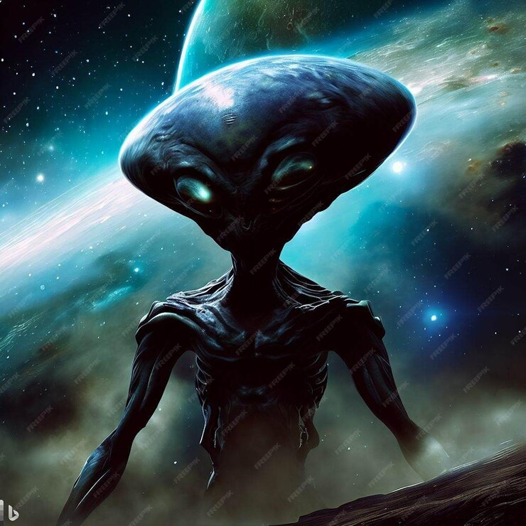

(x) visualizações
Continuação... Caso Colares

O Caso Colares é um dos mais intrigantes e documentados incidentes ufológicos do Brasil. Aqui está uma visão completa do caso:
Data e Localização:
O Caso Colares ocorreu em 1977, na região de Colares, localizada no arquipélago do Marajó, estado do Pará, no norte do Brasil.
Avistamentos e Fenômenos:
Durante o período do caso, os moradores da região relataram uma série de avistamentos de luzes estranhas nos céus e fenômenos inexplicáveis. Testemunhas descreveram objetos voadores não identificados (OVNIs) emitindo feixes de luzes coloridas e realizando manobras incomuns no céu. Além disso, muitos habitantes de Colares afirmaram terem sido atingidos por feixes de luzes que causaram ferimentos misteriosos, incluindo queimaduras e marcas na pele.
Investigação:
Diante do aumento dos relatos, uma equipe da Força Aérea Brasileira (FAB) foi enviada à região para investigar os incidentes. A equipe realizou entrevistas com testemunhas, coletou evidências e conduziu observações noturnas. Apesar de muitas testemunhas confirmarem os avistamentos, a FAB não chegou a uma conclusão definitiva sobre a origem dos fenômenos.
Cobertura da Mídia:
O Caso Colares atraiu a atenção da mídia nacional e internacional, que divulgou amplamente os relatos dos moradores e as investigações da FAB. O fenômeno também despertou o interesse de ufólogos e pesquisadores paranormais, que buscavam entender os eventos inexplicáveis ocorridos em Colares.
Teorias e Especulações:
Várias teorias foram propostas para explicar os avistamentos e os ataques de feixes de luzes em Colares. Alguns especularam sobre a presença de seres extraterrestres, enquanto outros sugeriram experimentos secretos do governo ou fenômenos naturais incomuns. No entanto, até hoje, o Caso Colares permanece envolto em mistério, sem uma explicação definitiva para os eventos ocorridos na região em 1977.
Legado:
O Caso Colares deixou um legado duradouro na ufologia brasileira, sendo frequentemente citado como um dos casos mais significativos e bem documentados de encontros com OVNIs e fenômenos paranormais no país. Ele continua a ser objeto de estudo e debate entre ufólogos, cientistas e entusiastas do paranormal, alimentando a curiosidade sobre a possibilidade de vida extraterrestre e fenômenos inexplicáveis.